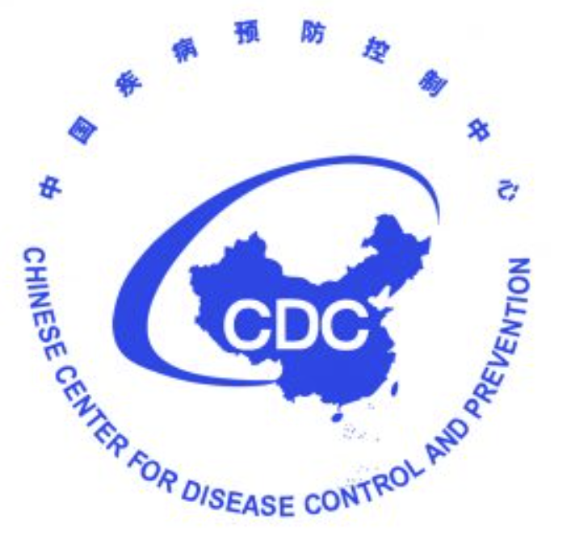

Siyu Zou
DISCIPLINES
Epidemiology; Cardiovascular Diseases; Hypertension; Blood Pressure; Nutrition; Obesity; Lifestyle Modification; Risk Prediction; Clinical Trials
RESEARCH INTEREST
Cardiovascular Diseases: Coronary Heart Disease; Heart Failure; Stroke; Atrial Fibrillation
Research Methods: Survival Analysis; Risk Prediction; Machine Learning; Omics Techniques; Causal Inference
High Dimensional Data: Metabonomics; Genomics
Health Indicator: Agatston Score; Cardiac Biomarker; Dietary Pattern; Blood Pressure Variability
SELECTED PUBLICATIONS
Zou S, Zou X, Zhang R, et al. Maternal depression and early childhood development among children aged 24-59 months: the mediating effect of responsive caregiving. Ann Gen Psychiatry. 2024;23(1):30. [DOI]
Zou S, Wang Z, Tang K. Social inequalities in all-cause mortality among adults with multimorbidity: a 10-year prospective study of 0.5 million Chinese adults. International health. 2023;15(2):123-133. [DOI]
Zou S, Wang Z, Bhura M, et al. Prevalence and associated socioeconomic factors of multimorbidity in 10 regions of China: an analysis of 0.5 million adults. Journal of Public Health (Oxford). 2022;44(1). [DOI]
Zou S, Wang Z, Bhura M, et al. Association of multimorbidity of non-communicable diseases with mortality: a 10-year prospective study of 0.5 million Chinese adults. Public Health. 2022;205. [DOI]
Zou S, Qi X, Marshall K, et al. Understanding the context of healthcare utilisation for children under-five with diarrhoea in the DRC: based on Andersen behavioural model. BMC health services research. 2022;22(1). [DOI]
Zou S, Cao W, Jia Y, et al. Sexual and reproductive health and attitudes towards sex of young adults in China. BMJ sexual & reproductive health. 2022;48(e1). [DOI]
Zou X, Zou S, Zhang R, et al. Association of Lifestyle Factors with Multimorbidity Risk in China: A National Representative Study. Applied Research Quality Life. 2024;19(3):1411-1435. [DOI]
Zou X, Zou S, Guo Y, et al. Association of smoking status and nicotine dependence with multi-morbidity in China: A nationally representative cross-sectional study. Tobacco induced diseases. 2023;21:81. [DOI]
Xue K, Zou S, Zou X, et al. Live-streaming comprehensive sexuality education in Western China: an analysis of the views of implementers and junior secondary students. Sex Education. 2023:1-16. [DOI]
Yan LL, Li C, Zou S, et al. Healthy eating and all-cause mortality among Chinese aged 80 years or older. International Journal of Behavioral Nutrition and Physical Activity. 2022;19(1). [DOI]
Gao Y, Wang Y, Zou S, et al. Association of iron supplementation and deworming with early childhood development: analysis of Demographic and Health Surveys in ten low- and middle-income countries. European journal of nutrition. 2021;60(6). [DOI]
Li H, Zou X, Zhang R, Zou S, et al. Association of chronic conditions and physical multimorbidity with new-onset incontinence in a nationwide prospective cohort study of older adults ≥ 50 years in China. Age and Ageing. 2024;53(1). [DOI]
Huang S, Gongye R, Zou S, et al. Menopausal status, age at menopause and risk of all-cause mortality among Chinese women: findings from a 10-year prospective study. BMJ Public Health. 2023;1(1):e000332. [DOI]
Zhou H, Ding Y, Yang Y, Zou S, et al. Effects on developmental outcomes after cesarean birth versus vaginal birth in Chinese children aged 1–59 months: a cross-sectional community-based survey. PeerJ. 2019;7:e7902. [DOI]
Gao Y, Zhang L, Kc A, Wang Y, Zou S, et al. Housing environment and early childhood development in sub-Saharan Africa: A cross-sectional analysis. PLoS Medicine. 2021;18(4):e1003578. [DOI]
Conference Proceedings
He Z, Zou S, Guo Q, et al. Time-Varying Healthy Lifestyle Profile and All-Cause Mortality Among the Oldest-Old in China. Circulation. 2023;147(Suppl_1). [DOI] (Poster Presentation)
Zou S, Wang Z, Bhura M, et al. Prevalence and associated socioeconomic factors of multimorbidity in ten regions of China: a cross-sectional analysis. The Lancet, 2020;396:S12. [DOI] (Poster Presentation)
Zou S. Global, and regional trends of dengue and its relationship with micronutrient deficiencies from 1990 to 2019: an analysis of the Global Burden of Disease 2019 study. 2nd World Health Forum towards Health Equity, 2022 (Oral Presentation)
RESEARCH PROJECTS
Understanding Factors Associated with Cardiac Rehabilitation Utilization at Johns Hopkins
Supervised by Dr. Lena Mathews, Professor of Medicine, Johns Hopkins UniversityDASH diet effect on blood pressure variability
Supervised by Prof. Lawrence Appel, Professor of Medicine, Johns Hopkins UniversityCoronary artery calcium and cardiovascular disease risk in the 75-and-older population
Supervised by Prof. Kunihiro Matsushita, Professor of Epidemiology, Johns Hopkins UniversityPredictors of Coronary Artery Calcium Distribution in Older Adults Aged >75
Supervised by Prof. Michael J. Blaha, Professor of Cardiology & Epidemiology, Johns Hopkins UniversitySocial inequalities in all-cause mortality among adults with multimorbidity
Supervised by Prof. Kun Tang, Professor of Vanke School of Public Health, Tsinghua UniversityTime-varying diet and longevity among Chinese aged 80 years or older
Supervised by Prof. Lijing Yan, Professor of Global Health Research Center, Duke University
WORK EXPERIENCE
| Bloomberg School of Public Health, Johns Hopkins University Graduate Research Assistant (Part-time) 01/2024 - Present |
|
| Bloomberg School of Public Health, Johns Hopkins University Graduate Research Assistant (Full-time) 05/2024 - 08/2024 |
|
| Vanke School of Public Health, Tsinghua University Research Data Analyst (Full-time) 07/2022 - 08/2023 |
|
 |
School of Public Health, Peking University Research Assistant (Part-time) 10/2021 - 06/2022 |
|  | Center for Diseases Control and Prevention, Beijing, China Medical Intern (Full-time) 07/2021-10/2021 |
|
Peking University Ninth Clinical Hospital Clinical Medical Intern (Full-time) 01/2020-01/2021 |